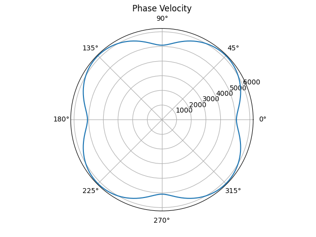

ALI-FMM and Ray Tracing Class
- class Anis_TTF_rays.ALI_FMM(veln, velpn, vel_map, scx, scz, group_vel=None, phase_vel=None, stif_den=None, dnx=0.001)[source]
Bases:
objectClass for calculating travel time fields and performing ray tracing through the travel time fields.
- __init__(veln, velpn, vel_map, scx, scz, group_vel=None, phase_vel=None, stif_den=None, dnx=0.001)[source]
Function to initialise class
- Parameters:
veln (2D numpy array) – Anisotropic material orientations at grid points. Set as array of zeros if using isotropic materials.
velpn (2D numpy array of type int) – Material index of each grid point (0 if using stiffness tensors and density, otherwise index for column in velocity table).
vel_map (2D numpy array) – Velocity scaling parameters for each grid point. Use array of ones for anisotropic materials, or array of velocities for isotropic materials.
scx (1D numpy array) – numpy array of x coordinates for sources/recievers.
scz (1D numpy array) – numpy array of z coordinates for sources/recievers.
group_vel (2D numpy array) – Group velocity curves with first column giving the angle (0-360 with increments of 1 degree) and other columns group velocities for each material(column is material indecies). If parameter is unused then defalts to velocity curve for isotropic material with velocity of 1(use vel_map to scale curve to set velocities at each point)
phase_vel (2D numpy array) – Phase velocity curves with first column giving the angle (0-360 with increments of 1 degree) and other columns phase velocities for each material(column is material indecies). If parameter is unused then defalts to velocity curve for isotropic material with velocity of 1(use vel_map to scale curve to set velocities at each point)
stif_den (3D numpy array of type np.int64) – Stifness tensors at each grid point. First two indecies are the position of the grid point and 3rd index is for the materials parameters, 0 - c_22, 1 - c_23, 2 - c_33, 3 - c_44, 4 - density. Array must use 64 bit integers with stiffness tensors in MPa and density in Kg/m^3. To use these values the material index of grid points should be 0. If a point is not using stiffness tensors and density the values are not used. If parameter not used, velocity curves will be used instead (don’t set material index to 0).
dnx (float) – Spacing between each point in metres, defalts as 1e-3.
- Raises:
TypeError – Creates error if velpn is not array of integers
TypeError – Creates error if stiffness tensors are not the correct type (np.int64). Does not create error if stifness tensors are not being used (None used)
- add_materials(materials, keep_materials=False)[source]
Function for adding materials using stiffness tensors and density of materials. Prints the material indices of materials if existing materials are kept.
- Parameters:
materials (1D array/2D array) – Material properties(stiffness tensors and density) for materials. Either array for single material or 2D array for multiple materials.
keep_materials (bool) – Whether the current materials in the class are kept when adding materials or deleted.
- Returns:
Nothing is returned. Materials are added into class.
- find_all_TTF_rays(veln, velpn, vel_map=None, subgrid_size=9, trans_pairs=None, stif_den=None, save_rays=True)[source]
Computes travel time fields for required receivers and performs ray tracing between source and receiver pairs. Returns travel times, however ray paths can be obtained using the function ray_path.
- Parameters:
veln (2D numpy array) – Anisotropic material orientations at grid points. Set as array of zeros if using isotropic materials.
velpn (2D numpy array of type int) – Material index of each grid point (0 if using stiffness tensors and density, otherwise index for column in velocity table).
vel_map (2D numpy array) – Velocity scaling parameters for each grid point. Use array of ones for anisotropic materials, or array of velocities for isotropic materials. If unused then an array of ones is used.
subgrid_size (int) – Parameter for computing travel time field on finer grid (must be a odd number), multiply indices by subgrid_size to move between indices on original grid. Default value is set to 1 i.e same as original grid.
trans_pairs (2D numpy array) – Transducer pairs where ray tracing is being performed (0 - No ray, 1 - compute ray). If parameter not used then all rays calculated(only one ray calculated per transducer pair i.e transducer is either source or receiver).
stif_den (3D numpy array of type int64) – Stiffness tensors at each grid point. First two indices are the position of the grid point and 3rd index is for the materials parameters, 0 - c_22, 1 - c_23, 2 - c_33, 3 - c_44, 4 - density. Array must use 64 bit integers with stiffness tensors in MPa and density in Kg/m^3. To use these values the material index of grid points should be 0. If a point is not using stiffness tensors and density the values are not used. If parameter not used, velocity curves will be used instead (don’t set material index to 0).
- Returns:
Travel times along the ray paths. When the path is not calculated the value is 0.
- Return type:
2D numpy array
- find_all_TTF_rays_parallel(veln, velpn, vel_map=None, subgrid_size=9, trans_pairs=None, stif_den=None, n_threads=2, save_rays=True)[source]
Computes travel time fields for required receivers and performs ray tracing between source and receiver pairs using parallelisation. Returns travel times, however ray paths can be obtained using the function ray_path. Each ray path is calculated in the same process as the receiver travel time field.
Warning
Use __name__ == “__main__” in order to run in parallel.
- Parameters:
veln (2D numpy array) – Anisotropic material orientations at grid points. Set as an array of zeros if using isotropic materials.
velpn (2D numpy array of type int) – Material index of each grid point (0 if using stiffness tensors and density, otherwise index for column in velocity table).
vel_map (2D numpy array) – Velocity scaling parameters for each grid point. Use array of ones for anisotropic materials, or array of velocities for isotropic materials. If unused then a array of ones is used.
subgrid_size (int) – Parameter for computing travel time field on finer grid (must be a odd number), multiply indices by subgrid_size to move between indices on original grid. Default value is set to 1 i.e same as original grid.
trans_pairs (2D numpy array) – Transducer pairs where ray tracing is being performed (0 - No ray, 1 - compute ray). If parameter not used then all rays calculated(only one ray calculated per transducer pair i.e transducer is either source or receiver). Leading diagonal must have zeros.
stif_den (3D numpy array of type np.int64) – Stiffness tensors at each grid point. First two indices are the position of the grid point and 3rd index is for the materials parameters, 0 - c_22, 1 - c_23, 2 - c_33, 3 - c_44, 4 - density. Array must use 64 bit integers with stiffness tensors in MPa and density in Kg/m^3. To use these values the material index of grid points should be 0. If a point is not using stiffness tensors and density the values are not used. If parameter not used, velocity curves will be used instead (don’t set material index to 0).
n_threads (int) – Number of threads to be used.
save_rays (bool) – Boolean value for if rays should be saved into class (rays can be obtained using ray_path function).
- Returns:
Travel times along the ray paths. When the path is not calculated the value is 0.
- Return type:
2D numpy array
- generate_group_vel(c_22, c_23, c_33, c_44, density, plot=True)[source]
Generates the group velocity curve, given a materials stiffness tensors and density.
- Parameters:
c_22 (int) – Stiffness Tensor in Pa.
c_23 (int) – Stiffness Tensor in Pa.
c_33 (int) – Stiffness Tensor in Pa.
c_44 (int) – Stiffness Tensor in Pa.
density (int) – Density of the material in Kg/m^3.
plot (bool) – True or False value for whether to plot curve or not. Default is True.
- Returns:
Array of group velocities from 0 to 360 degrees with increments of 1 degree.
- Return type:
2D numpy array
c_22 = 203.6e9 c_23 = 133.5e9 c_33 = 203.6e9 c_44 = 129.8e9 density = 7874 ALI_FMM.generate_group_vel(None, c_22, c_23, c_33, c_44, density, True)
- generate_phase_vel(c_22, c_23, c_33, c_44, density, plot=True)[source]
Generates the phase velocity curve, given a materials stiffness tensors and density.
- Parameters:
c_22 (int) – Stiffness Tensor in Pa.
c_23 (int) – Stiffness Tensor in Pa.
c_33 (int) – Stiffness Tensor in Pa.
c_44 (int) – Stiffness Tensor in Pa.
density (int) – Density of the material in Kg/m^3.
plot (bool) – True or False value for whether to plot curve or not. Default is True.
- Returns:
Array of phase velocities from 0 to 360 degrees with increments of 1 degree.
- Return type:
2D numpy array
c_22 = 203.6e9 c_23 = 133.5e9 c_33 = 203.6e9 c_44 = 129.8e9 density = 7874 ALI_FMM.generate_phase_vel(None, c_22, c_23, c_33, c_44, density, True)
- plot_group(material_index=1)[source]
Plots the group velocity curve for a material defined by table of velocities.
- Parameters:
material_index (int) – Index of the material being plotted, default value is 1.
- Returns:
Does not return anything.
- plot_phase(material_index=1)[source]
Plots the phase velocity curve for a material defined by table of velocities.
- Parameters:
material_index (int) – Index of the material being plotted, default value is 1.
- Returns:
Does not return anything.
- ray_path(i, j)[source]
Function for returning the ray path for a given source and receiver which was calculated in the function find_all_TTF_rays. Will return None values if the path hasn’t been calculated.
- Parameters:
i (int) – Source index for the required ray path.
j (int) – Reciever index for the required ray path.
- Returns:
ray_x, ray_y - Arrays for the x and y positions of points in the ray path. If there is no path then None values are returned.
- Return type:
1D numpy array, 1D numpy array
- update(veln, velpn, vel_map=None, stif_den=None, subgrid_size=1, sources=None)[source]
Function for computing travel time fields from material properties.
- Parameters:
veln (2D numpy array) – Anisotropic material orientations at grid points. Set as array of zero if using isotropic materials.
velpn (2D numpy array of type int) – Material index of each grid point (0 if using stiffness tensors and density, otherwise index for column in velocity table).
vel_map (2D numpy array) – Values used to scaling velocity for each grid point. Use array of ones for anisotropic materials, or array of velocities for isotropic materials (using material with velocity curve with velocity of 1) . If unused then an array of ones is used.
stif_den (3D numpy array of type np.int64) – Stiffness tensors at each grid point. First two indices are the position of the grid point and 3rd index is for the materials parameters, 0 - c_22, 1 - c_23, 2 - c_33, 3 - c_44, 4 - density. Array must use 64 bit integers with stiffness tensors in MPa and density in Kg/m^3. To use these values the material index of grid points should be 0. If a point is not using stiffness tensors and density the values are not used. If parameter not used, velocity curves will be used instead (don’t set material index to 0).
subgrid_size (int) – Parameter for computing travel time field on finer grid (must be a odd number), multiply indices by subgrid_size to move between indices on original grid. Default value is set to 1 i.e same as original grid.
sources (1D numpy array) – Array of 0’s and 1’s for selecting which sources should be used for calculating travel time fields. If unused all sources will be used.
- Returns:
Travel time fields for all sources. If sources parameter used then sources not used return array of zeros.
- Return type:
3D numpy array
- update_i(source_i, veln, velpn, vel_map, stif_den=None, subgrid_size=1)[source]
Function for computing a single travel time field.
- Parameters:
source_i (int) – Index of the source.
veln (2D numpy array) – Anisotropic material orientations at grid points. Set as array of zeros if using isotropic materials.
velpn (2D numpy array of type int) – Material index of each grid point (0 if using stiffness tensors and density, otherwise index for column in velocity table).
vel_map (2D numpy array) – Values used for scaling velocities at each grid point. Use array of ones for anisotropic materials, or array of velocities for isotropic materials.
stif_den (3D numpy array of type np.int64) – Stiffness tensors at each grid point. First two indices are the position of the grid point and 3rd index is for the materials parameters, 0 - c_22, 1 - c_23, 2 - c_33, 3 - c_44, 4 - density. Array must use 64 bit integers with stiffness tensors in MPa and density in Kg/m^3. To use these values the material index of grid points should be 0. If a point is not using stiffness tensors and density the values are not used. If parameter not used, velocity curves will be used instead (don’t set material index to 0).
subgrid_size (int) – Parameter for computing travel time field on finer grid (must be a odd number), multiply indies by subgrid_size to move between indices on original grid. Default value is set to 1 i.e same as original grid.
- Returns:
Travel time field for the selected source.
- Return type:
2D numpy array
- update_parallel(veln, velpn, vel_map=None, stif_den=None, subgrid_size=1, sources=None, n_threads=2, low_mem=False)[source]
Function for computing travel time fields from material properties in parallel. Parallelization is only possible for different travel time fields. Since there is a computational cost to setting up parallelization, this is not recommended for small grids as will likely take longer.
Warning
Use __name__ == “__main__” in order to run in parallel.
- Parameters:
veln (2D numpy array) – Anisotropic material orientations at grid points. Set as array of zero if using isotropic materials.
velpn (2D numpy array of type int) – Material index of each grid point (0 if using stiffness tensors and density, otherwise index for column in velocity table).
vel_map (2D numpy array) – Values used to scaling velocity for each grid point. Use array of ones for anisotropic materials, or array of velocities for isotropic materials (using material with velocity curve with velocity of 1) . If unused then an array of ones is used.
stif_den (3D numpy array of type np.int64) – Stiffness tensors at each grid point. First two indices are the position of the grid point and 3rd index is for the materials parameters, 0 - c_22, 1 - c_23, 2 - c_33, 3 - c_44, 4 - density. Array must use 64 bit integers with stiffness tensors in MPa and density in Kg/m^3. To use these values the material index of grid points should be 0. If a point is not using stiffness tensors and density the values are not used. If parameter not used, velocity curves will be used instead (don’t set material index to 0).
subgrid_size (int) – Parameter for computing travel time field on finer grid (must be a odd number), multiply indices by subgrid_size to move between indices on original grid. Default value is set to 1 i.e same as original grid.
sources (1D numpy array) – Array of 0’s and 1’s for selecting which sources should be used for calculating travel time fields. If unused all sources will be used.
n_threads (int) – Number of threads to be used. If n_threads = 1 then use update instead of update parallel.
low_mem (bool) – whether to use less memory or not. True saves travel time fields to directory as “temp_TTF_i.npy”(load using np.load) for TTF i and False saves them in memory.
- Returns:
Travel time fields for all sources. If sources parameter used then sources not used will return array of zeros. If low_mem=True then returns None.
- Return type:
3D numpy array/None
{kind=link}
{kind=link}